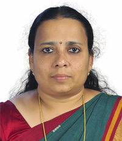

Number Theory
The study of integers and their properties – primes, divisibility and the patterns hidden in whole numbers.
Click to find a random prime.
Department of Mathematics · RSET
Assistant Professor of Mathematics, with a research interest in Number Theory.

Background: the Ulam spiral – primes, drawn in a square spiral. Move your cursor over it.
Dr. Bindu V A joined the Department of Mathematics, RSET in 2009 and is currently working as an Assistant Professor. She completed her graduation in Mathematics from Bharata Mata College, Thrikkakara, followed by an M.Sc. in Mathematics from Newman College, Thodupuzha.
To complement her career, she added an M.Phil. from Cochin University of Science & Technology. Interested in furthering her career in teaching, she also completed a B.Ed. from St. Joseph Training College for Women, Ernakulam. She was awarded a Ph.D. in Mathematics by Bharathidasan University in 2025.
Bharathidasan University
Cochin University of Science & Technology
St. Joseph Training College for Women, Ernakulam
Newman College, Thodupuzha
Bharata Mata College, Thrikkakara
The study of integers and their properties – primes, divisibility and the patterns hidden in whole numbers.
Click to find a random prime.
Teaching and exploring mathematics at the undergraduate level for over a decade at RSET.
Kerala Mathematical Association
Department of Mathematics
RSET, Kerala, India